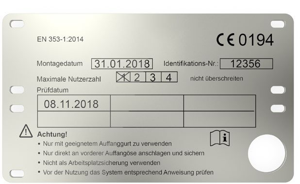
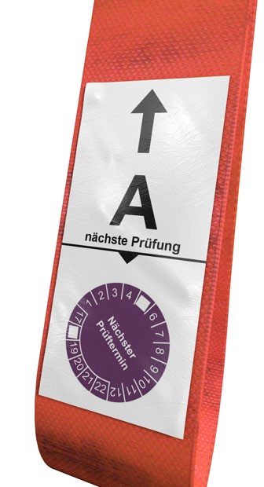

Die Wartung dient der Erhaltung der sicheren Funktion von PSA gegen Absturz durch vorbeugende Maßnahmen wie Reinigung und geeignete Lagerung.
10.1.1 Reinigung
PSA gegen Absturz sind nach Bedarf zu reinigen und zu pflegen. Dabei sind die Angaben des Herstellers zu berücksichtigen.
Im Einzelfall kann die Reinigung je nach Art der Verschmutzung unverzüglich nach der Benutzung notwendig sein.
10.1.2 Aufbewahrung
PSA gegen Absturz dürfen bei ihrer Aufbewahrung keinen Einflüssen ausgesetzt werden, die ihre sichere Funktion beeinträchtigen können. Die Angaben des Herstellers sind dabei zu beachten.
So ist die Ausrüstung beispielsweise
Eine Instandsetzung hat unter genauer Beachtung der Angaben des Herstellers zu erfolgen. Sie darf nur von einer sachkundigen Person (vom Hersteller autorisiert) durchgeführt werden.
10.3.1 Die Benutzer und Benutzerinnen haben PSA gegen Absturz vor jeder Benutzung durch Sichtprüfung auf ihren ordnungsgemäßen Zustand und auf einwandfreies Funktionieren zu prüfen. Werden Mängel festgestellt, sind diese dem Verantwortlichen zu melden und die Arbeiten mit den mangelhaften Ausrüstungen im absturzgefährdeten Bereich einzustellen.
10.3.2 Gemäß den Angaben des Herstellers in der Gebrauchsanleitung hat die Unternehmerin oder der Unternehmer PSA gegen Absturz entsprechend den Einsatzbedingungen (z. B. Hitzearbeitsplatz) und den betrieblichen Verhältnissen (z. B. wechselnde Benutzer bzw. Benutzerinnen) nach Bedarf, mindestens jedoch alle 12 Monate, auf ihren einwandfreien Zustand durch eine sachkundige Person prüfen zu lassen.
Als sachkundig gelten Personen, die aufgrund ihrer fachlichen Ausbildung und Erfahrung ausreichende Kenntnisse auf dem Gebiet der PSA gegen Absturz und deren bestimmungsgemäßen Benutzung haben und mit den einschlägigen staatlichen Arbeitsschutzvorschriften, dem DGUV Regelwerk sowie allgemein anerkannten Regeln der Technik, DIN EN Normen und DIN Normen, soweit vertraut sind, dass sie den ordnungsgemäßen Zustand von PSA gegen Absturz prüfen und beurteilen können. Diese Anforderungen erfüllen Personen, die eine Teilnahme an einem Lehrgang nach DGUV Grundsatz 312-906 "Grundlagen zur Qualifizierung von Personen für die sachkundige Überprüfung und Beurteilung von persönlichen Absturzschutzausrüstungen" erfolgreich abgeschlossen haben.
Als Nachweis der Qualifizierung erhält die sachkundige Person eine Bescheinigung. Beschränkte sich die Ausbildung auf bestimmte Produkte bzw. Produktgruppen, wird dies in der Bescheinigung gesondert vermerkt.
Für die sachkundige Überprüfung von z. B. Höhensicherungsgeräten wird durch den Hersteller eine Autorisierung und/oder besondere Qualifizierung verlangt.
Es wird empfohlen, dass die sachkundige Person die Überprüfung entsprechend dokumentiert und die jeweils letzte Prüfung auf/an der Schutzausrüstung kenntlich macht (z. B. Angabe des letzten Prüfdatums oder die Angabe des nächsten Prüfdatums – siehe Abbildungen 81a und 81b).
 |
 |
Abb. 81a Beispiel für eine Kennzeichnung mit Hinweis auf das Prüfdatum |
Abb. 81b Beispiel für eine Kennzeichnung mit Hinweis auf den nächsten Prüftermin |
Hinweis: Eine "sachkundige Person" zur Überprüfung von PSA muss nicht den Anforderungen an eine "zur Prüfung befähigte Person" im Sinne der Betriebssicherheitsverordnung (§ 14 "Prüfung der Arbeitsmittel") entsprechen. Die Betriebssicherheitsverordnung regelt die Belange für den Umgang mit Arbeitsmitteln, jedoch nicht den Umgang mit PSA.
10.3.3 Abweichend von Abschnitt 10.3.2 ist für die Benutzung von Steigschutzeinrichtungen und Anschlageinrichtungen, die an einer baulichen Anlage fest montiert sind, zu überprüfen, dass die letzte Sachkundigenprüfung nicht länger als ein Jahr zurückliegt, wenn nicht kürzere Fristen festgelegt sind.
Bei festen Führungen, die seltener als einmal jährlich benutzt werden, kann die Prüfung durch eine für das System sachkundige Person des Steigganges gleichzeitig während der vorgesehenen Begehung erfolgen. Generell ist zu beachten, dass sich die sachkundige Person während der Überprüfung zusätzlich sichern muss (z. B. Anschlagen an der Steigleiter, siehe Abbildungen 62 und 63 in Abschnitt 7.14.2). Bei Steigeisengängen, die mit einer festen Führung aus Drahtseil ausgestattet sind, darf die zusätzliche Sicherung bei der Prüfung nicht durch Anschlagen an Steigeisen erfolgen.
Für die sachkundige Prüfung von dauerhaft befestigten Anschlageinrichtungen gelten die Hinweise der Fachinformation "Durchführung von Sachkundigenprüfungen an Anschlageinrichtungen" und der DGUV Information 201-056 "Planungsgrundlagen von Anschlageinrichtungen auf Dächern".
Für die Ausrüstung sind die regelmäßigen Überprüfungen, Wartungen und Instandsetzungen zu dokumentieren.
Wesentliche Inhalte dieser Dokumentation sind dem Muster in Anhang 3 zu entnehmen.